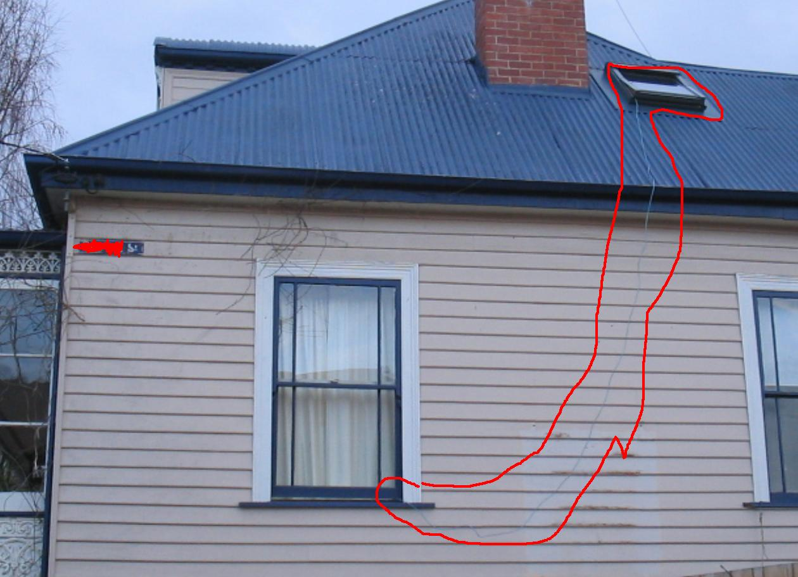
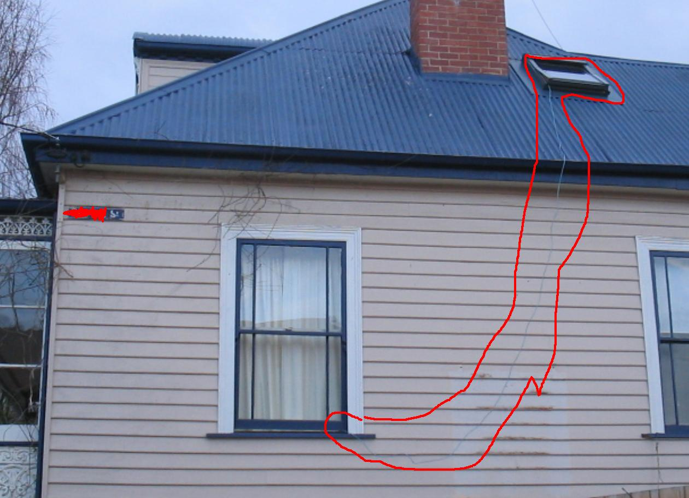

Wuack wuack


 



Piracy was a bit of a shitshow for a while, especially with all the private trackers built on top of the Torrent Bits source code, along with forums dedicated to modifying the TBits source for setting up private trackers, way too dangerous with the kiddy fiddlers etc. on this planet! Was fun helping take down sites like 0sec and TPG, along with getting an idea of how easily these private trackers were being set up with SilentAccess.. When did ISIS start again? Not sure if people ever got what they deserved for the groping in Lost? They started having to put the birth date on the back of licences as well..
Admittedly it's a little pathetic putting these up publicly, however this community has a horrible history of lying, using people's work to mislead/lie to people and even worse just telling people they have to pretend to play along. People still haven't gotten what they deserve for that kind of behaviour over many periods of my life.. People refuse to speak up about what happened during these periods, along with people claiming they were antimatroid when that was me as well (including the Google sponsored ai comps, reddit [am qu83rt as well, and have used many other aliases] along with the live irc channel for the Chris Dorner saga).